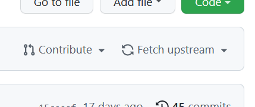
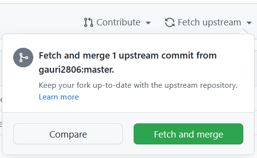

Step 1: Go to your forked GitHub repository (https://github.com/<YOUR-USERNAME>/weboverflow/).
Step 2: Click 'Fetch upstream'.
Step 3: Click 'Fetch and merge'
Step 4: Open the command prompt in your cloned folder.
Step 5: run git fetch.
Step 6: run git pull.
Note: if you get an error, try stashing your changes.